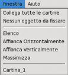

Menu Finestra
 Da questo menu è possibile impostare la posizione e il comportamento delle finestre delle singole cartine all'interno della finestra di SkyCharts.
{kind=link}
Collega tutte le cartine
Questa voce ha la stessa funzione dell'icona  nel Gruppo Collega-Fissa nella barra degli oggetti.
nel Gruppo Collega-Fissa nella barra degli oggetti.
E' possibile avere più di una cartina aperta con diverse impostazioni di campo visivo, rotazione o griglie di coordinate. Con la funzione Collega tutte le cartine tutte le cartine assumeranno come posizione il centro della cartina correntemente selezionata. Tutti gli spostamenti in una delle cartine verranno riprodotti esattamente in tutte le altre. Rimane comunque possibile cambiare il campo visivo o la rotazione delle singole cartine senza condizionare le altre.
Fissa su...
Questa voce ha la stessa funzione dell'icona  nel Gruppo Collega-Fissa nella barra degli oggetti, o a un click col tasto destro sulla cartina seguito dalla selezione di Fissa su... nella finestra pop-up che appare.
nel Gruppo Collega-Fissa nella barra degli oggetti, o a un click col tasto destro sulla cartina seguito dalla selezione di Fissa su... nella finestra pop-up che appare.
Con questa funzione è possibile visualizzare continuamente un oggetto al centro della cartina. Fissare su un oggetto ha senso solo quando si è impostato il sistema di coordinate su Alt/Az e si è selezionato ''Auto aggiornamento ogni'' nella finestra di dialogo Data / Ora. Se una di queste due condizioni non è impostata la cartina non si muove.
Elenco
Questa funzione è attivabile direttamente dall'icona  nel Gruppo Finestra A della barra principale.
nel Gruppo Finestra A della barra principale.
Selezionando questa voce le finestre delle cartine vengono impilate una sull'altra.
Affianca Orizzontalmente
Non ci sono altri modi di attivare questa funzione.
Le cartine vengono posizionate a righe.
Affianca Verticalmente
Questa funzione è attivabile direttamente dall'icona  nel Gruppo Finestra A della barra principale.
nel Gruppo Finestra A della barra principale.
Le cartine vengono posizionate a colonne.
Massimizza
Questa voce ha lo stesso effetto di un click sull'icona nell'angolo in alto a destra della singola finestra della cartina.
La cartina selezionata verrà ingrandita su tutta la finestra di CdC. E' il contrario della funzione Ripristina
Lista Cartine
In fondo al menu viene mostrata una lista delle cartine aperte. Se si seleziona una di esse, questa diverrà la cartina attiva.